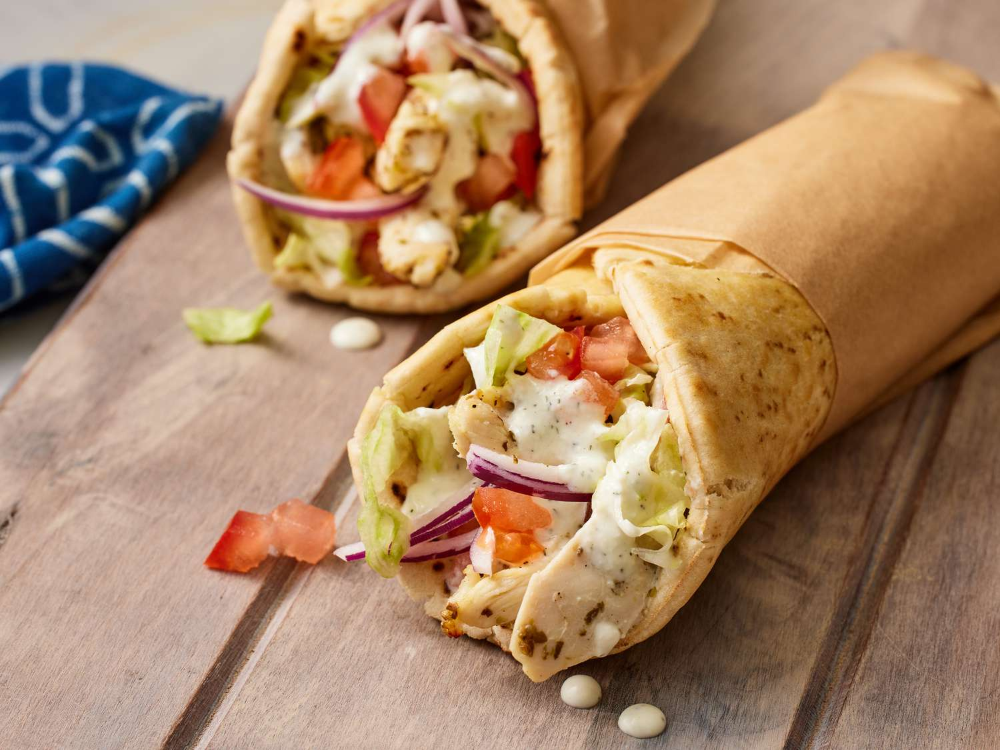

Chicken Gyros

Description
Chicken Gyros are
sandwichs traditionally of lamb and beef (in this case chicken), tomato,
onion, and yogurt sauce on pita bread.
Ingredients
Tzatziki:
- 1 (16 ounce) container Greek yogurt
- 1 medium cucumber, peeled and coarsely chopped
- 2 cloves garlic, minced
- 1 tablespoon extra-virgin olive oil
- 1 1/2 teaspoons dried dill weed
- 1 teaspoon distilled white vinegar
- 1 teaspoon lemon juice
- salt and ground black pepper to taste
Chicken:
- 4 cloves garlic, minced
- 1 medium lemon, juiced
- 2 tablespoons extra-virgin olive oil
- 1 tablespoon dried oregano
- 2 teaspoons red wine vinegar
- salt and ground black pepper to taste
- 1 1/4 pounds skinless, boneless chicken breast halves
- cut into strips
Gyros:
- 6 (6 inch) pita bread rounds
- 1 medium tomato, diced
- 1 medium red onion, thinly sliced
- 1/2 head iceberg lettuce, chopped